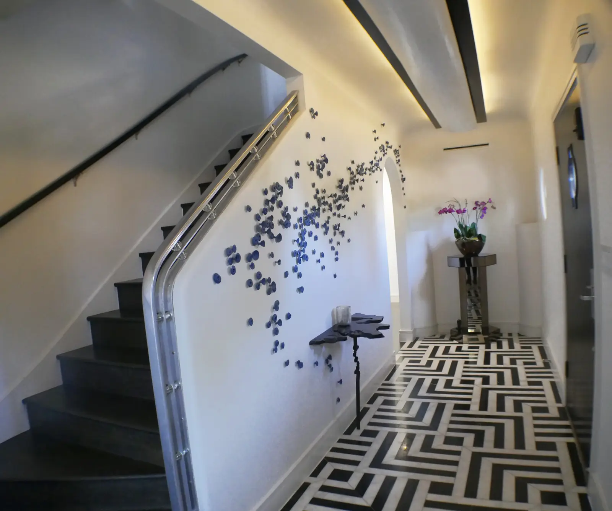
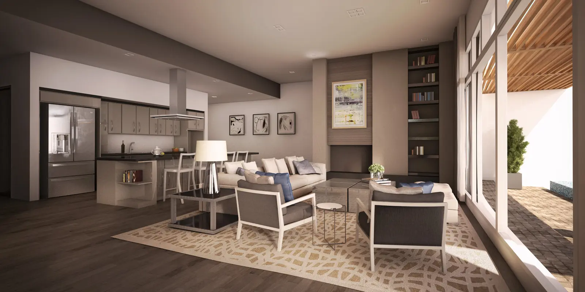
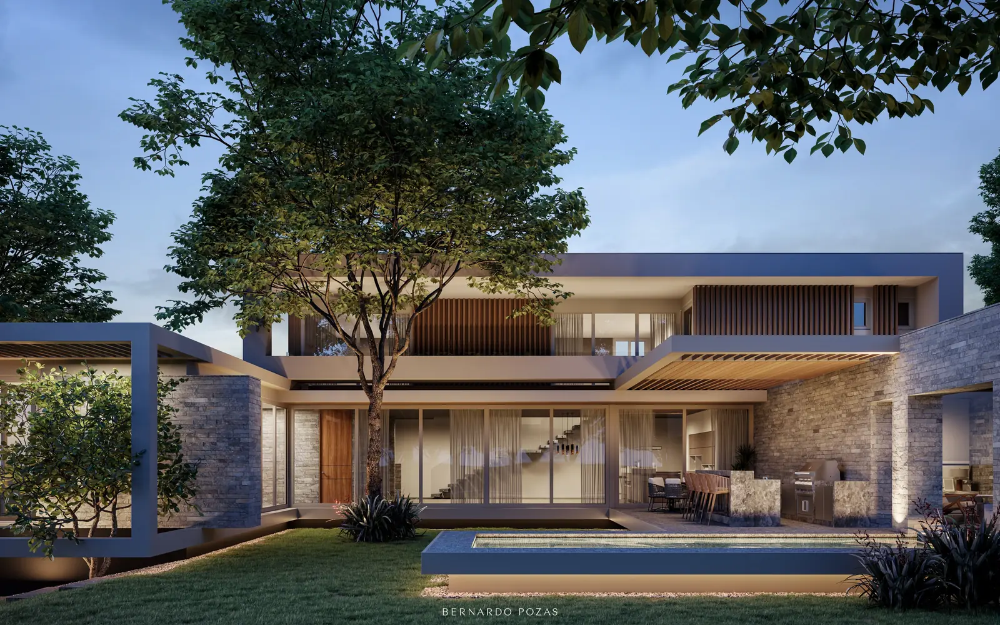
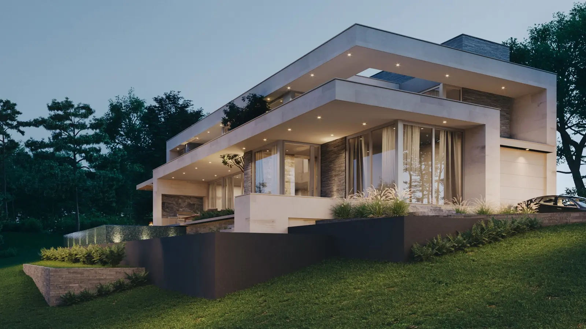
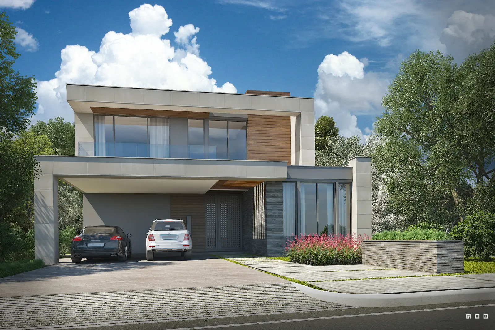
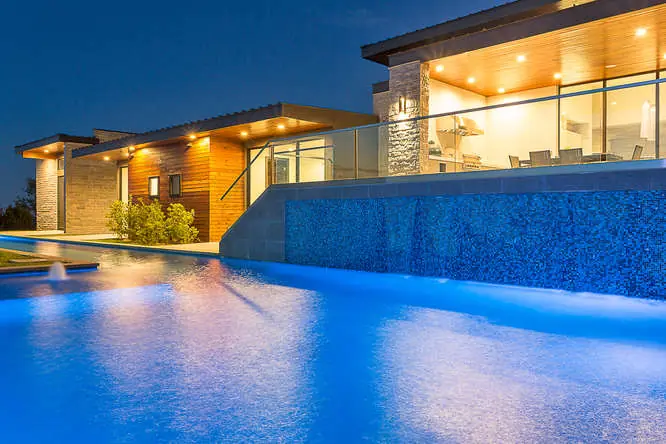
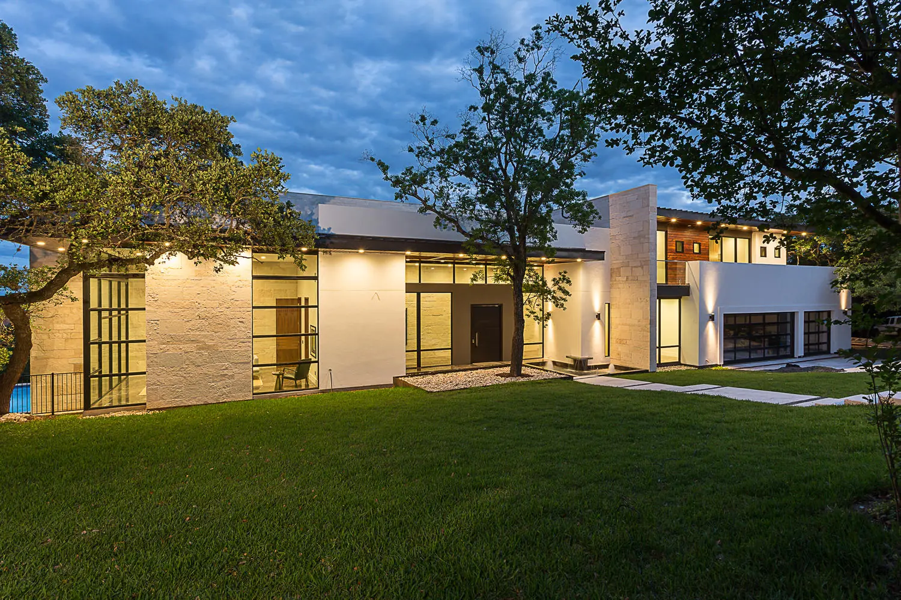
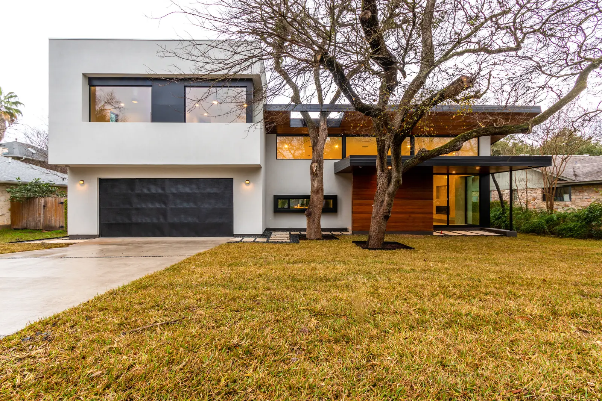
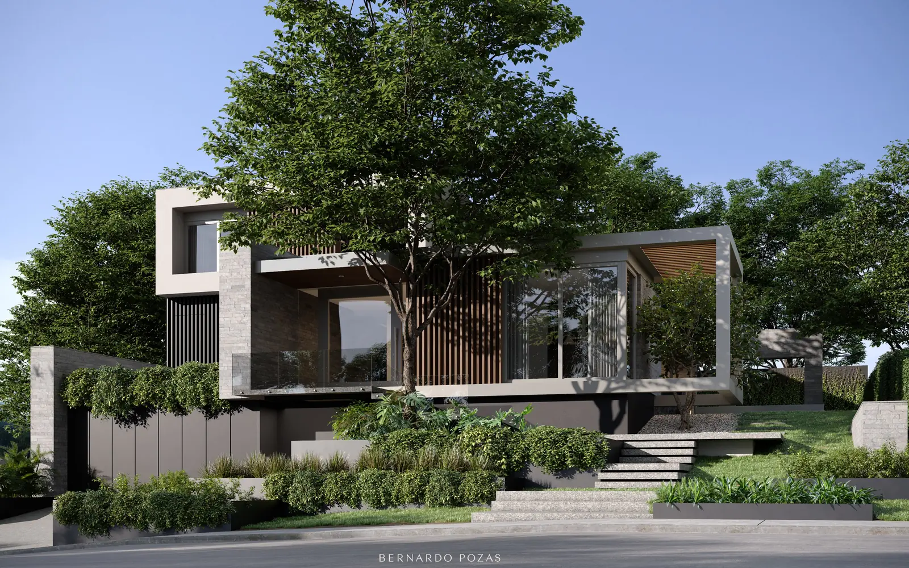

The portfolio
Every home gets its own personality.
Finished · Westlake
Bird’s Eye View
A house at the top of the hill with 360 degrees of jaw dropping views, right in the heart of Westlake. One of the only places in Austin where you can see the sunrise and the sunset with the turn of a chair.


Renovated 2013 · Austin
Bohn House
A unique home designed in 1937 based on the science fiction film Lost Horizon. Completely renovated by Contempo in 2013, it has become an emblematic reflection of modern and contemporary Austin, without losing its original soul and rich history.


Finished · Lake Travis
Lake House
An ideal family house, framed within Lake Travis and the Hill Country, that makes you feel like you are on vacation every day.

In progress
Now building


Images as posted on each project page. Contempo to confirm which are renderings.
More finished homes






Also finished: Redbud, Barn Swallow, Bird’s Eye View, Bohn House, Lake House, Chelsea, EastSide Gem, Nest in the City, Thousand Oaks, Cueva de Oro, Barn Swallow #2.